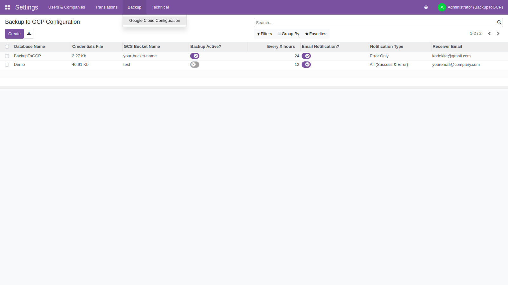
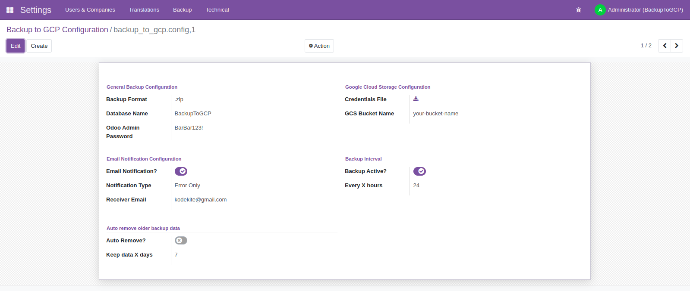
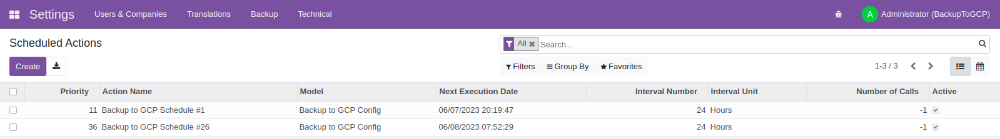
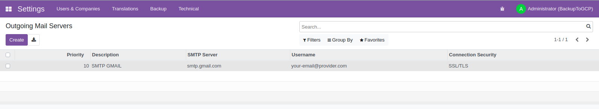
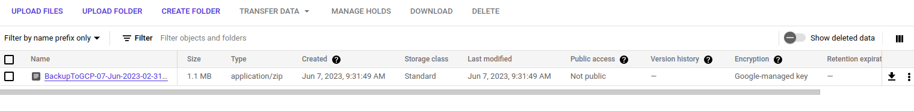
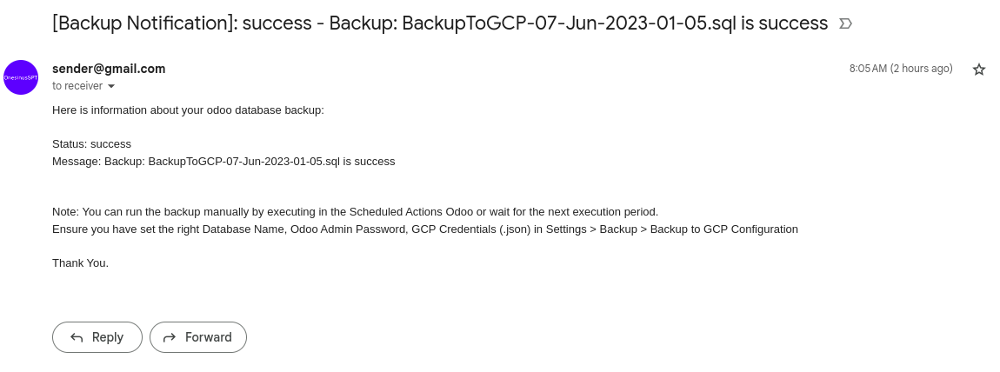
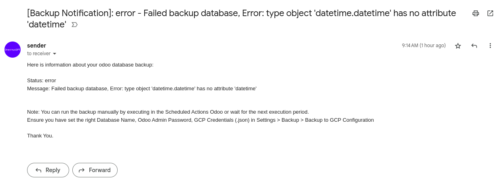

Backup Config Form

This module helps you to make auto backup for your database odoo to Google Cloud Storage (GCS). Using a credential file (.json) format.
Backup file options: .sql & .zip
Prerequisites:Backup Config Page
Backup Config Form
Backup Config Page Detail
Schedulers (Auto Generated)
Outgoing Mail Setup (Example)
Uploaded Backup File
Success Backup Notification
Failed Backup Notification
Restore Notes
If you want to restore you can download backup file from GCP and restore by accessing restore feature
from this url
http://your-odoo-domain/web/database/selector